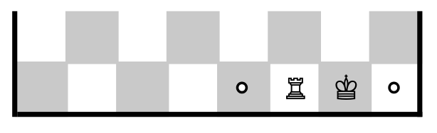

Stage 5 駒の動きを判定する
4-4 キングの動きを判定する

キングなんてタテヨコナナメに 1 マスしか動かねーんだから書くことねーだろ
そう単純に思ってもらっちゃ困りますね。いや、半分はあたりなんですけど。ではその半分を先に片付けてしまいましょう。
# KING
elif piece == KING:
# normal motion (one step)
if abs(toFILE - frFILE) <= 1 and abs(toRANK - frRANK) <= 1:
logger.debug('KING NORMAL')
return True
基本動作の場合は file と rank の差が 1 以下であれば構いません。「以下」ですよ「以下」、これがないとナナメしかいけませんから。ほら、タテに進むとき file の差は 0 じゃないですか。
~~~~~~~~~~~~~~~
さて、簡単な方が終わりましたから厄介者をどうにかしましょう。
もう書くことねーよ。終わりだ終わり
キャスリングですよ。

こいつは基本的にキングの動きとて扱うのがいちばん楽ですからね。ルークで考えると、キャスリングの場合に加えて単純にルークを動かす場合がありますから、

あっ、今キング動かしたくないのに
ってなったりして面倒です。
この場合はキャスリングすべきかどうかわかりませんよね。
キャスリングの条件をもう一度確認してみましょうか。
- キングと動かすルークを一度も動かしたことがない
- キングと動かすルークの間に何もない
- 移動前後、移動中にキングがチェックされない
めんどくせーのばっかだな
~~~~~~~~~~~~~~~
条件の一番上「キングとキャスリングするルークを一度も動かしたことがない」というのを判定します。そこで使っているのが castl_q/castl_k です。
どっかで見覚えがあるようなないような
コンストラクタをご覧ください。
def __init__(self, ...
...
self.ep_target = copy.deepcopy(target) # for en passan
self.castl_k = copy.deepcopy(castl_k) # for castling
self.castl_q = copy.deepcopy(castl_q) # for castling
self.turn = turn # starts from 1
...
castl_k, castl_q というのを定義していますよね。それぞれキングサイド・クイーンサイドにキャスリングできるプレーヤーを格納しています。リスト型でミュータブルですので、引き込んだリストが変更を受けないように copy.deepcopy を使っていますね。
~~~~~~~~~~~~~~~
castl_k で具体的に見てみましょう。ゲーム開始時は両プレーヤーともキングサイドにキャスリングする資格がありますから、
castl_k = [WHITE, BLACK]
となります。さて、白が h1 のルークを動かしたとしましょう。
castl_k = [BLACK]
となりますよね。この後黒がキャスリングすれば、もう黒もこれ以上キングサイドにキャスリングできませんから
castl_k = []
となります。castl_q についても同じようにします。
~~~~~~~~~~~~~~~
では motionjudge に戻ってコーディングしましょう。まず player ごとに変数 rank を設定します。
# preparing for castling; setting rank
if player == WHITE:
rank = 1 - 1
elif player == BLACK:
rank = 8 - 1
else:
logger.error('UNEXPECTED PLAYER VALUE in motionjudge')
print('SYSTEM ERROR')
sys.exit('SYSTEM ERROR')
白は第 1 rank で、黒は第 8 rank でしかキャスリングできませんよ。ここの rank はインデックスとして使いますから、- 1 をお忘れなく。
お次に if で条件分岐します。まずクイーンサイドにキャスリングときの条件は
- キングと a file のルークを一度も動かしたことがない
- キングが [e - 1, rank] から [c - 1, rank] に移動する
- キングと a file のルークの間に何もない
- その相手の駒が [c - 1][rank], [d - 1][rank], [e - 1][rank] のどれにも動くことができない（＝チェックされない）
ですね。
最後の条件は if 文では検証が難しいので、それ以外の 3 つを if でまず場合わけします。
# Q-side; adequate fr and to, all passing squares are EMPTY
if player in self.castl_q and frFILE == e - 1 and frRANK == rank and toFILE == c - 1 and toRANK == rank and self.board[b - 1][rank] == self.board[c - 1][rank] == self.board[d - 1][rank] == EMPTY:
~~~~~~~~~~~~~~~
一番最初の条件は castl_q に player が格納されているか、その次の条件は frFILE や toRANK が正しい値になっているか見ればいい。
真ん中の条件は [b - 1, rank], [c - 1, rank], [d - 1, rank] が EMPTY であればいいですね。またキャスリングするときキングは [e - 1, rank] から [c - 1, rank] に移動するので、移動元や移動先もしっかり指定しなければいけません。
rank から 1 引かねーと... いや、元々 1 引いて宣言してるからいいのか
~~~~~~~~~~~~~~~
最後の条件を検証しましょう。まずキングを狙いにくる駒のいるマスの file を表す変数 fil と rank を表す ran を変数に 2 重の for ループで盤上全ての駒を網羅します。
# K must not be checked while castling
for ran in range(SIZE):
for fil in range(SIZE):
# piece is opponent's and reaches a square through which K moves
if fundam.PosNeg(self.board[fil][ran]) == -player and (self.motionjudge(fil, ran, e - 1, rank, Q) or self.motionjudge(fil, ran, d - 1, rank, Q) or self.motionjudge(fil, ran, c - 1, rank, Q)):
logger.info('CHECKED IN THE WAY')
return False
if 分岐は
- もし [fil, ran] のマスにいるのが相手の駒で
- その相手の駒が [c - 1][rank], [d - 1][rank], [e - 1][rank] のどれか一つにでも動くことができるなら「動かせない」False を返す
- すべてのマスについてクリア(相手はチェックできない)ならば True を返す
という形です。最初の条件、「相手の駒」というのは -player であらわせますね。2 番目の条件は motionjudge を使えば解決できます。

motionjudge？ここ motionjudge だよね？
そうです。motionjudge のなかで motionjudge を使います。ですがこのメソッドはただ単に「ここからここに駒は動かせるか」ということを検証するものにすぎません。
それにこの位置に相手のキングが来るとき、そのキングはキャスリングしてませんから、いわゆる再起関数のようなループはできませんよ。
~~~~~~~~~~~~~~~
キングサイドについても全く同様に確認できます。こちらはキャスリング可能なプレーヤーが castl_k に格納されていること、キングの行先が [g - 1][rank] になることに注意してください。
ここまでで動くことができず放置されたら、王様とはいえ動くことは許されません。すべて False をリターンしてしまいましょう。
これにて駒ごとの確認はすべて終わりです。長かったですね。最後に「piece の値がこれ以外の場合」をのぞいておきましょう。
# all other King's moves are invalid
else:
logger.error('UNEXPECTED VALUE of PIECE in motionjudge')
print('SYSTEM ERROR')
sys.exit('SYSTEM ERROR')
ポーンからキングまですべて場合分けしてんのに、まだ引っかからない得体の知れない駒は間引いておかないと。